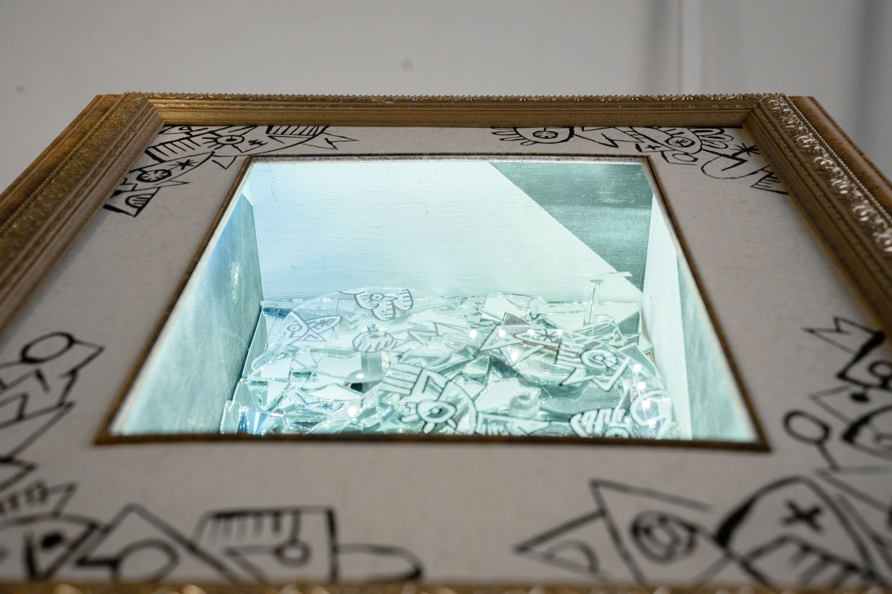
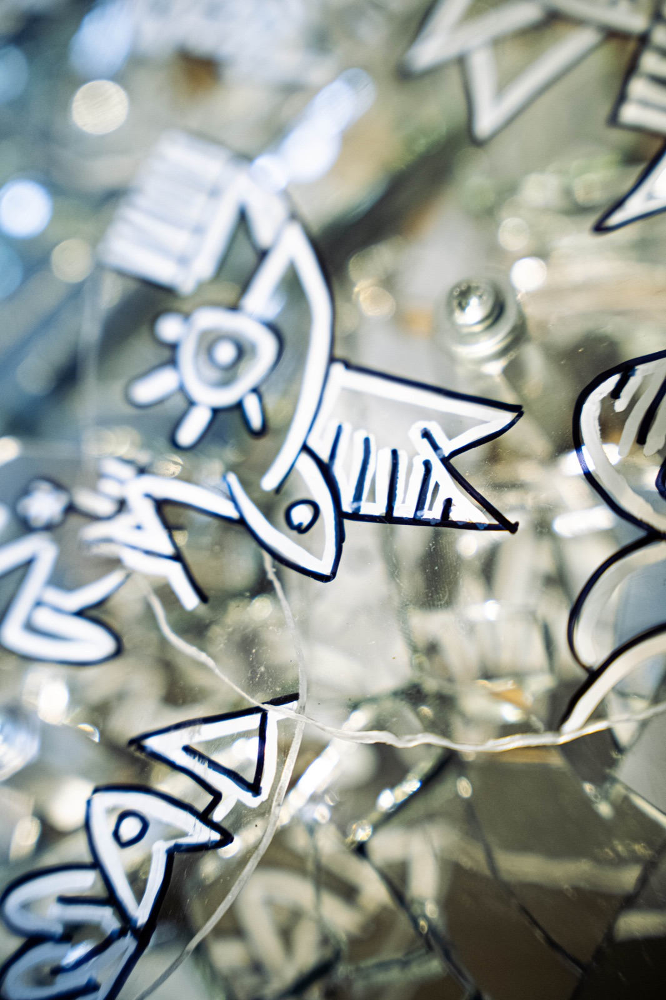
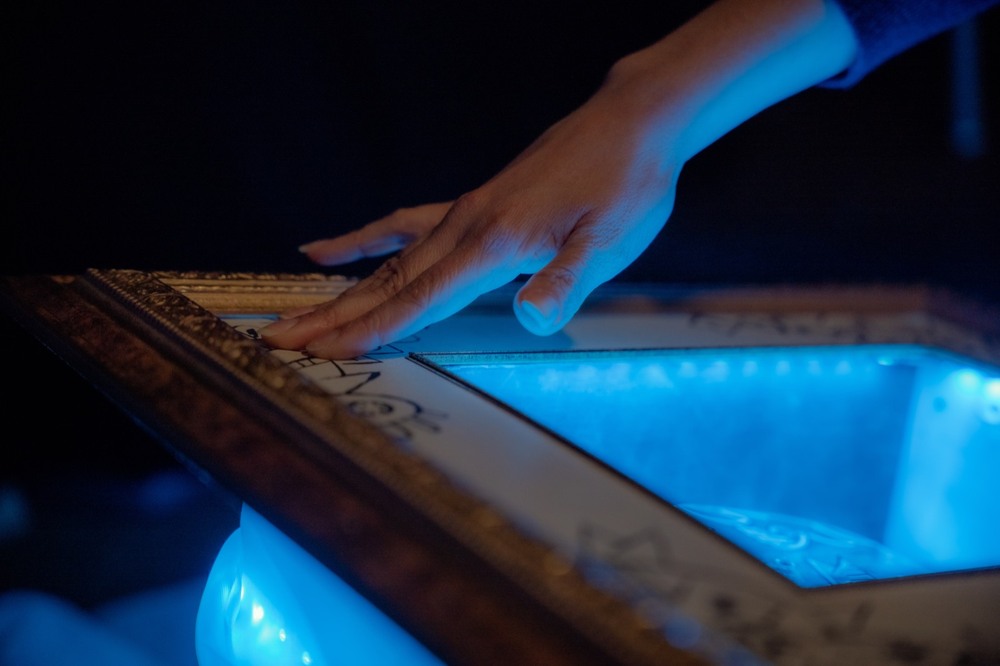
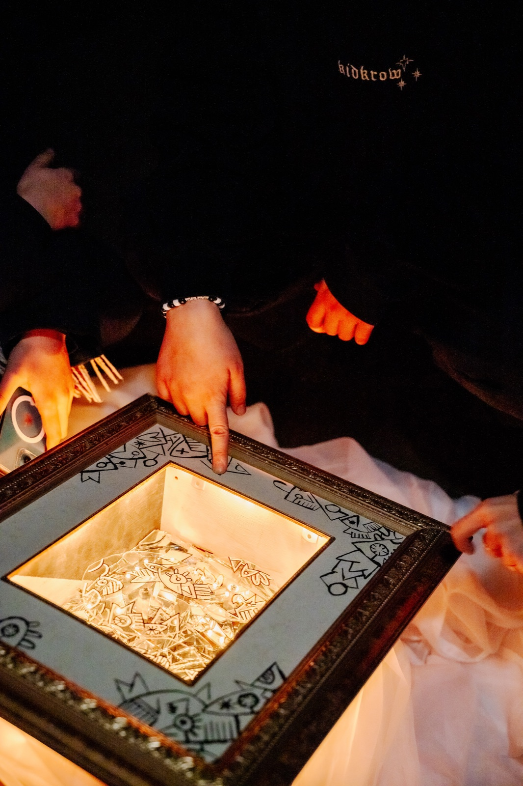
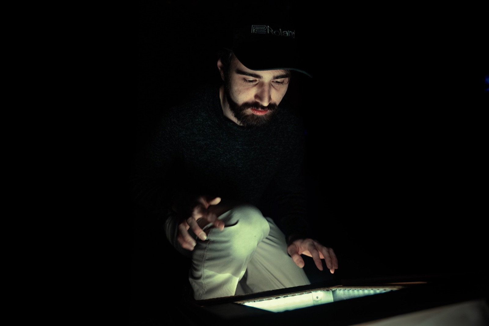
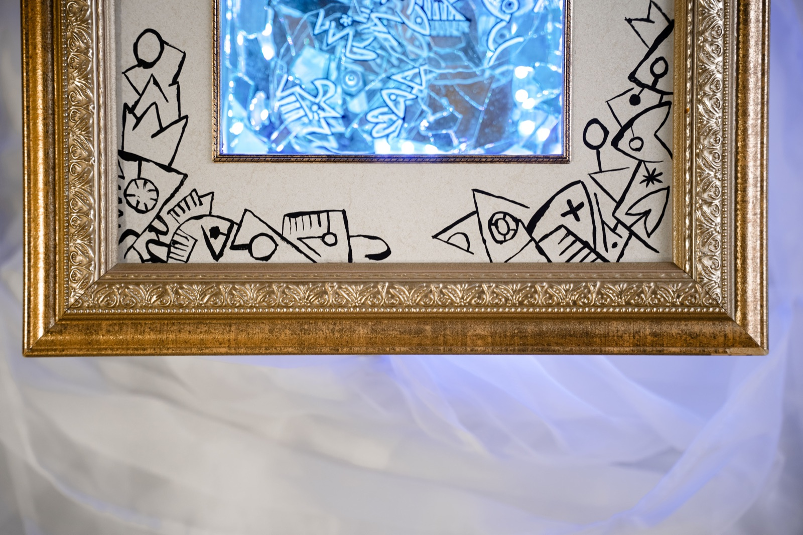
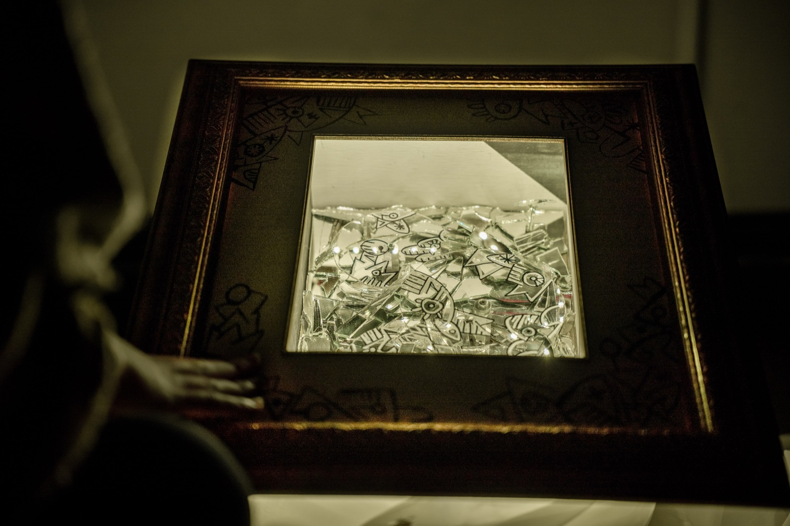
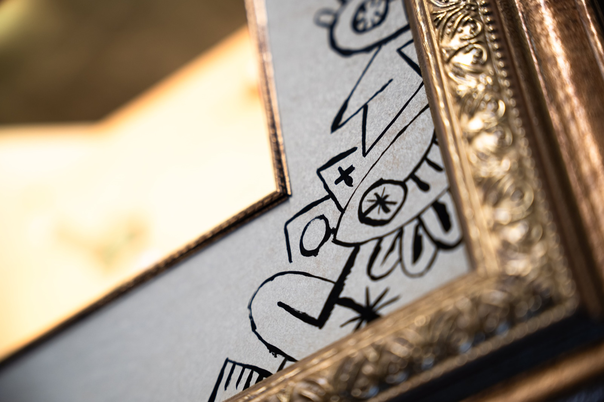
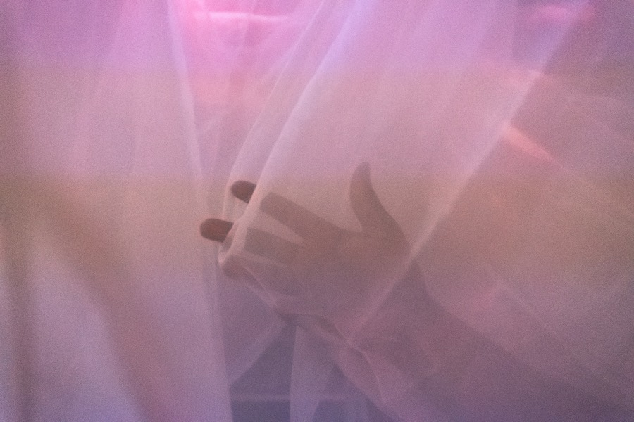

Cliquer pour regarder
Installations interactives
(7/22)
Une structure cinétique où des miroirs tournent sous vos doigts : une réflexion sur la croissance et l'identité.
Réflexion est une structure conçue et créée par Jean-Christophe Zephir, Meryem Berbiche et Dominic Roberts. Elle oppose la rigidité mécanique à la fluidité organique, comme le scintillement de la lumière sur l'eau.
Placée au sol, l'œuvre évoque aussi l'ancrage et l'humilité : grandir ne veut pas dire renier ses racines.
(Fonctionnement)
Ce qui se passe quand on touche le cadre.
Un cadre incliné à 35 degrés, parsemé de fragments réfléchissants, éclairé par des bandes DEL à l'intérieur et à l'extérieur. Des tiges motorisées surmontées de miroirs s'élèvent du cadre.


Des capteurs capacitifs sont cachés sous des motifs électro-tribaux dessinés sur le cadre. En les touchant, le visiteur déclenche des séquences lumineuses et des rotations aléatoires des miroirs : il devient une partie de l'œuvre. J'étais responsable de l'électronique.


Les tiges incarnent l'individu qui dépasse ses limites pour se transformer. Leurs miroirs reflètent une identité en perpétuelle reconfiguration, au fil des expériences et des rencontres.

Images8 photos



